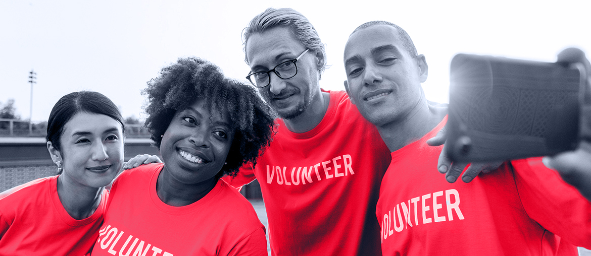

1
Map the real flow
Review app, pickup forms, depot intake, charity requests, certificates, and staff handoffs across current ERA tools.
Electronic Recycling Association x Elinext
Saw ERA is adding board-level technology guidance. That is a good moment to strengthen the app, pickup forms, data-security proof, and reporting before more depots and partners add load.
The board search says ERA is planning its next technology step. The hard part is not only the public app or website. It is the flow from pickup booking to device intake, data wiping, reuse, donation, and reports. If that flow stays split across forms and manual updates, staff carry the load and corporate donors get slower proof.
A 6-week pilot would find quick wins, then ship one useful slice of the pickup-to-donation flow.
Review app, pickup forms, depot intake, charity requests, certificates, and staff handoffs across current ERA tools.
Add mobile QA checks for booking, photos, location, QR scan, permissions, and store release readiness.
Improve the mobile pickup path, reduce heavy page load, and keep analytics clean across ERA domains.
Prototype a simple donor view for pickup status, data-destruction proof, reuse outcome, and export-ready reports.
Elinext is a full-cycle software development company, active since 1997, with about 700 in-house specialists and no freelancers. We build mobile apps, web portals, backend systems, QA, AI/ML, and DevOps work. For ERA, ISO 9001 and ISO 27001 matter because donor data and proof records need care. Teams behind SiemensBroadcomVolkswagenTUI trusted Elinext for serious delivery. The squad above would give ERA steady engineering help without adding long hiring cycles.

Elinext built an all-in-one platform for non-profit fundraising, admin work, and fewer disconnected systems.
View case study
Elinext delivered a charity social network for donors, volunteers, and non-profits with simple user journeys.
View case study